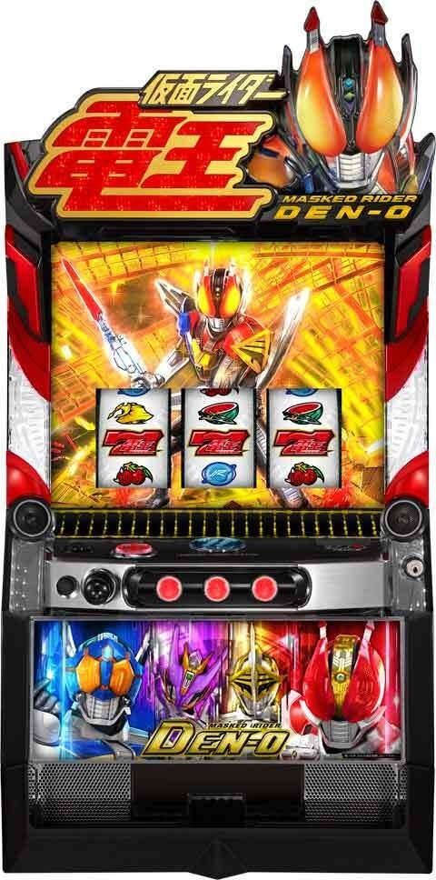
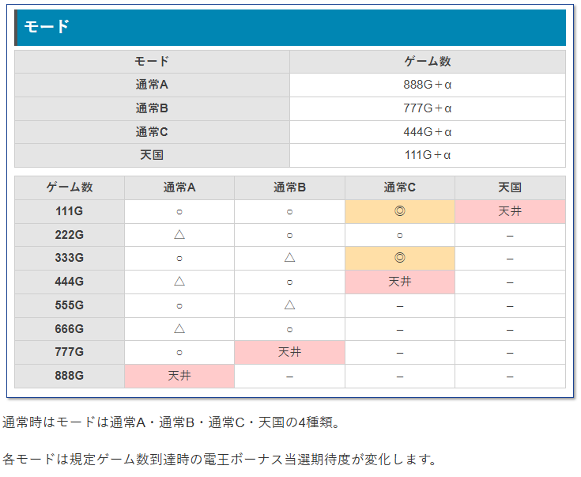

L 仮面ライダー電王

【天井情報】
最大888G+α 電王ボーナス当選
スルー回数天井 AT間の電王ボーナスが5スルー後、6回目に到達するとAT確定。
【リセット判別】
不明
【有利区間について】
有利区間切れ条件 不明
狙い目
【リセット狙い】
740Gから
【ボーナス間天井狙い】
AT間0から3スルー → ボーナス間700Gからボーナスまで
AT間4スルー → ボーナス間500GからATまで
【ゾーン狙い】
・111ゾーン
0から3スルー 40Gから
4スルー 0Gから（ゾーン当選したら5スルーが打てるため）
※朝一は弱い？
【スルー天井狙い】
電王ボーナス5スルーから
【小役ポイント狙い】
90ptから
【有利区間切れ狙い】
不明
やめ時
AT終了後の引戻し失敗後は数ゲーム回して前兆有無確認してやめ
前回本前兆中のレア役等でCZのストックがAT終了後に出てくる場合がありそう
AT・ボーナス終了時のボイスで「見つかってない星～」は天国確認
その他
モード

参考元
基本情報
- メーカー: 京楽
- 機械割: 97.5% 〜 113.1%
- 導入開始日: 2025年03月03日（月）
- ゲーム性概要: ●電王ボーナスからのAT突入がメインルート ●ATはバトルタイプで4戦突破すれば上位ATへ！ ●上位ATは理論上AT当選の約25%で突入！


打ち方
打ち方・小役
打ち方（小役狙い）
［最初に狙う絵柄］ 左リール上段付近にBARを目押し。スイカがスベってきた時のみ右リールにスイカを目押ししよう。

［スイカ停止時は要押し］ 中リールはフリー打ちでOK。右リールはスイカ（BARや赤7目安）を狙おう。

［レア役の停止例］

解析情報通常時
小役関連
小役確率（設定1）
| 役 | 確率 |
|---|---|
| リプレイ | 1/7.3 |
| 共通ベル | 1/14.1 |
| 弱チェリー | 1/65.5 |
| 強チェリー | 1/327.7 |
| スイカ | 1/83.2 |
| チャンス目A | 1/1310.7 |
| チャンス目B | 1/436.9 |
スイカ契機のゲーム数加算（天井短縮）
スイカ成立時の8.0%でゼロノスが登場してゲーム数を加算（＝天井ゲーム数短縮）を抽選。2回出現するパターンなら2回ゲーム数が加算される。
発生回数
| 回数 | 振り分け |
|---|---|
| 1回 | 98.0% |
| 2回 | 2.0% |
内部状態関連
カウンター高確概要
全役で移行抽選をする小役カウンター加算の高確状態。弱レア役は移行のチャンス、強レア役時は高確移行濃厚、さらにCZ前兆中も必ず高確状態となる（ミルクディッパーステージ滞在で高確示唆）。

モード
通常モード
通常時は通常A・B・C、天国という4つのモードで3桁ゾロ目ゲーム数到達時の電王ボーナス当選テーブルが変化。111G到達時のトータル期待度は約46%と高い。
通常モードの特徴＆天井
| モード | 特徴 | 天井 |
|---|---|---|
| 通常A | 奇数の3桁ゾロ目で当選しやすい | 888G＋α |
| 通常B | 偶数の3桁ゾロ目で当選しやすい | 777G＋α |
| 通常C | 444G以内に当選 | 444G＋α |
| 天国 | 111G以内に当選 | 111G＋α |
通常モードのテーブル
| ゲーム数 | 通常A | 通常B | 通常C | 天国 |
|---|---|---|---|---|
| 111G | ◯ | ◯ | ◎ | 天井 |
| 222G | △ | ◯ | ◯ | |
| 333G | ◯ | △ | ◎ | |
| 444G | △ | ◯ | 天井 | |
| 555G | ◯ | △ | ||
| 666G | △ | ◯ | ||
| 777G | △ | 天井 | ||
| 888G | 天井 |
小役カウンター
小役カウンター解説
小役が成立するたびにカウンターが増えていき、100pt到達でCZを抽選。前兆を経てCZの当落が告知される。 カウンター加算の高確状態もあるため、状況次第で一気に加算することも可能。100pt到達後の前兆中もカウンターは加算され、100pt到達時は一旦抽選がストック、前兆終了後に再度前兆がスタートする。 強レア役は内部状態不問で100pt濃厚だ。

小役カウンター性能
| 項目 | 特徴 |
|---|---|
| ポイント獲得契機 | リプレイ・ベル・レア役 |
| カウンターによる抽選 | 100pt到達ごとにCZを抽選 |
| 100ptまでの平均 | 81.6G |
| その他 | 高確中は獲得ポイント優遇、 電王ボーナス終了後もポイントを引き継ぐ |
小役カウンター加算当選率 通常滞在時
| 役 | リプレイ | ベル | 弱レア役 | 強レア役 |
|---|---|---|---|---|
| 加算なし | 80.3% | 99.0% | － | 100% |
| 5pt | 19.7% | 1.0% | － | 100% |
| 15pt | － | － | 97.6% | 100% |
| 20pt | － | － | 1.6% | 100% |
| 30pt | － | － | 0.8% | 100% |
| 100pt | － | － | － | 100% |
高確滞在時
| 役 | リプレイ | ベル | 弱レア役 | 強レア役 |
|---|---|---|---|---|
| 加算なし | 59.8% | 93.2% | － | 100% |
| 5pt | 40.2% | 5.1% | － | 100% |
| 15pt | － | 1.6% | 87.5% | 100% |
| 20pt | － | － | 10.9% | 100% |
| 30pt | － | － | 1.6% | 100% |
| 100pt | － | － | － | 100% |
高確中はリプレイやベル時でも加算しやすいうえ、レア役時の加算ポイントも優遇される。
小役カウンター100pt（MAX）時のCZ当選率
| 設定 | 当選率 |
|---|---|
| 1 | 48.9% |
| 2 | 48.9% |
| 4 | 49.2% |
| 5 | 49.8% |
| 6 | 50.0% |
若干ではあるが、高設定ほどCZに当選しやすい。
CZ当選時の種別振り分け
| CZ | 振り分け |
|---|---|
| 憑依タイム | 80.1% |
| 最初から俺ゾーン | 17.2% |
| 最初からクライマックスゾーン | 2.7% |
割合的には低いが、最初からクライマックスゾーン（成功で上位AT）が選択される可能性もある。
憑依タイム（CZ）
憑依タイム概要
小役カウンターMAX契機で突入する15Gのチャンスゾーン。突入時に憑依するキャラで期待度が変化する。 成功すれば電王ボーナス濃厚、電王ボーナス当選後はAT突入が抽選される。 消化中にフォームチェンジで憑依キャラが変化するチャンスパターンもある。

憑依タイム（CZ）性能
| 項目 | 内容 |
|---|---|
| 当選契機 | 小役カウンターMAX時の抽選 |
| 突入確率 | 1/227.3 |
| 継続ゲーム数 | 15G（前半10G/後半5G） |
| 成功期待度 | 約39% |
| 消化中の抽選 | 成立役に応じて電王ボーナスを抽選、 電王ボーナス当選後はATを抽選 |
| その他 | 突入時に憑依するキャラで 成立役ごとの期待度が変化 |
［開始時の憑依キャラ］

［前半］ アイコンを獲得するほど期待度がアップする。

［後半］ バトルで電王ボーナスの当落を告知！

開始時のフォーム別トータル選択率＆期待度
| フォーム | 出現割合 | 期待度 |
|---|---|---|
| ウラタロス | 41.6% | 29.3% |
| キンタロス | 34.9% | 39.9% |
| リュウタロス | 18.2% | 48.2% |
| モモタロス | 5.2% | 77.2% |
成立役別の期待度
| フォーム | その他 | リプレイ | 弱レア役 | 強レア役 |
|---|---|---|---|---|
| ウラタロス | 0.4% | 4.8% | 25.9% | 100% |
| キンタロス | 0.9% | 11.3% | 37.9% | 100% |
| リュウタロス | 1.2% | 16.3% | 47.1% | 100% |
| モモタロス | 2.3% | 34.0% | 79.7% | 100% |
モモタロスならリプレイでも期待度約34%と大チャンス。強レア役はフォーム不問で電王ボーナス濃厚だ。
エフェクト別のトータル出現割合＆期待度
| エフェクト | 出現割合 | 期待度 |
|---|---|---|
| 白 | 22.4% | 15.5% |
| 青 | 35.2% | 25.5% |
| 緑 | 35.7% | 36.3% |
| 赤 | 6.3% | 87.1% |
| 虹 | 0.5% | 100% |
フォーム別のエフェクト・トータル出現割合
| エフェクト | ウラタロス | キンタロス | リュウタロス | モモタロス |
|---|---|---|---|---|
| 白 | 21.9% | 20.2% | 25.0% | 25.4% |
| 青 | 35.3% | 34.7% | 35.6% | 35.5% |
| 緑 | 36.7% | 37.8% | 32.5% | 31.0% |
| 赤 | 5.7% | 6.8% | 6.4% | 7.6% |
| 虹 | 0.4% | 0.5% | 0.4% | 0.5% |
フォーム別のエフェクト・トータル期待度
| エフェクト | ウラタロス | キンタロス | リュウタロス | モモタロス |
|---|---|---|---|---|
| 白 | 6.1% | 6.9% | 24.3% | 61.5% |
| 青 | 13.8% | 19.0% | 39.3% | 73.4% |
| 緑 | 24.6% | 32.6% | 51.0% | 83.5% |
| 赤 | 82.1% | 85.8% | 91.9% | 100% |
| 虹 | 100% | 100% | 100% | 100% |
フォームチェンジの昇格率＆期待度
| チェンジパターン | 昇格率 | 期待度 |
|---|---|---|
| ウラタロス→リュウタロス | 0.7% | 43.0% |
| ウラタロス→モモタロス | 1.2% | 75.7% |
| キンタロス→リュウタロス | 7.3% | 43.0% |
| キンタロス→モモタロス | 2.1% | 75.7% |
最初から俺ゾーン（CZ）
最初から俺ゾーン概要
期待度は憑依ゾーンより低いが、こちらのCZは成功すればAT直行。通常時の小役カウンター契機だけでなく、AT終了後に必ず突入するのも特徴だ。 突入契機・クリア期待度は一緒だが、成功すれば上位AT濃厚となる「最初からクライマックスゾーン」もある。

最初から俺ゾーン/最初からクライマックスゾーン性能
| 項目 | 内容 |
|---|---|
| 当選契機 | 小役カウンターMAX時の抽選、AT終了後 |
| 突入確率 | 最初から俺ゾーン：1/1055.3 最初からクライマックスゾーン：1/6484.2 |
| 継続ゲーム数 | 10G |
| 成功期待度 | 約25% |
| 消化中の抽選 | 成立役に応じてATを抽選 ※最初からクライマックスゾーンは成功＝上位AT濃厚 |
| その他 | AT終了後は継続セット数を引き継ぐ、 最終ゲームは成功期待度が高い |
［最初からクライマックスゾーン］

［リールロック］ リールロック発生時に左リールから「俺・参・上」の文字煽りが発生して、3文字が完成すればAT濃厚。最終ゲームはこのリールロックが必ず発生する。

最初からクライマックスゾーン極概要
上位AT終了後の一部やエンディング後に突入するCZ。演出の流れは最初から俺ゾーンと同じだが、成功期待度は 約80% と高く、成功すれば上位AT濃厚。さらに、一度成功させれば以降は上位AT終了後に必ず突入するため、超強力なトリガーとなる。

最初からクライマックスゾーン極（SCK）性能
| 項目 | 内容 |
|---|---|
| 当選契機 | エンディング終了後、権利獲得時のAT終了後 |
| 継続ゲーム数 | 10G |
| 成功期待度 | 約80% |
| 消化中の抽選 | 成立役に応じて上位ATを抽選 |
| その他 | 成功後は上位AT移行かつ、 上位AT終了後もSCKに突入 |
リールロック発生時の成功期待度
| 停止文字 | 最初から俺ゾーン/ 最初からクライマックスゾーン | 最初から クライマックスゾーン極 |
|---|---|---|
| 「俺」停止 | 22.2% | 52.5% |
| 「俺・参」停止 | 58.5% | 66.7% |
「俺・参・上」がすべて止まれば成功。最初からクライマックスゾーン極はリールロックが発生した時点で期待度50%オーバーだ。
解析情報ボーナス時
電王ボーナス
電王ボーナス概要
初当りのメイン要素である20G間の擬似ボーナス。消化中は 全役でAT抽選 をおこない、AT当選後はAT中のアイコンレベルの昇格を抽選する。 4種類の告知モードを任意で選択することが可能。告知モードで設定示唆要素も変わるため、状況によって使い分けることをオススメしたい。

電王ボーナス性能
| 項目 | 内容 |
|---|---|
| 当選契機 | 規定ゲーム数消化時、憑依ゾーン成功時 |
| 継続ゲーム数 | 20G |
| 1Gあたりの純増 | 約2.5枚 |
| AT突入期待度 | 約50% |
| 消化中の抽選 | 成立役に応じてATを抽選 |
| その他 | 4種類の告知モードを任意で選択可能、 AT当選後はAT中の保留レベル昇格を抽選 |
［イマジン］チャンス告知

［ヒロイン］後告知

［デスイマジン］完全告知

［プリン］いつでも告知 ボタンを押せばいつでも当選結果などを確認できる。

AT当選率
| 役 | 当選率 |
|---|---|
| その他 | 0.5% |
| リプレイ | 12.6% |
| 弱レア役 | 12.6% |
| 強レア役 | 69.7% |
※電王ボーナス中のATトータル当選率は44.7%
AT当選後はレア役で保留レベルの昇格を抽選する。
AT当選後の保留レベル昇格率
| 役 | 昇格率 |
|---|---|
| 弱レア役 | 50.0% |
| 強レア役 | 100% |
告知モードごとの期待度はコチラ
俺フィーバー（AT）
AT概要
4Gの導入パートを経て突入する30G＋αのバトル型AT。 セット間で敵のHPを削りきればセット継続、4セット継続すれば上位ATに突入する。 ベルが揃えば攻撃濃厚＆ベル確率は約1/2なので、レア役を含め毎ゲーム1/2以上で攻撃がHIT。実戦上、 ナビなし時はレア役濃厚 （リプレイもナビが出る）なので、ナビなし時はかなりアツい。

俺フィーバー（AT）性能
| 項目 | 内容 |
|---|---|
| 当選契機 | 最初から俺ゾーン成功、電王ボーナス中の抽選、 上位AT終了時（40連未満時） |
| 継続ゲーム数 | 導入4G＋バトルパート30G＋α |
| 1Gあたりの純増 | 約2.5枚 |
| 1戦あたりの 勝利期待度 | 約64% ※最初から俺ゾーンの引き戻し込みだと約70% |
| 4戦突破期待度 | 約25% |
| 消化中の抽選 | 保留と成立役に応じてダメージや特殊効果抽選、 ベルorレア役で攻撃以上、 保留非獲得時は救済メーターが加算 |
| その他 | 4戦突破で上位ATに突入、 終了後は最初から俺ゾーンに突入 |
終了後の最初から俺ゾーンで引き戻した場合、セット継続回数を引き継ぐ。上位AT終了後に再度4戦突破した時も上位ATの継続回数は引き継がれる。
セットごとのフォーム特徴
| フォーム | 特徴 |
|---|---|
| ソード （1セット目） | ● チェリー成立時の攻撃が優遇 ● 攻撃系保留の色はバランス良く出現 ● 強チェリーは大ダメージor特殊効果発動 |
| ロッド （2セット目） | ● リプレイ成立時に約23%でロックが発動 ● 特殊保留の出現率が高い |
| アックス （3セット目） | ● ベル成立時に約8%でロックが発動 ● 攻撃系保留は強弱の偏りが大きい ● 赤保留・必殺技保留は連続して出やすい |
| ガン （4セット目） | ● チャンス目成立時は大ダメージor特殊効果発動 ● 特殊保留はほぼ発生せず、基本的に攻撃系保留のみ |
1セットごとに特性（フォーム）の異なる電王が登場。スイカは全フォーム共通でゼロノスが出やすいためアツい！
［セットごとのフォーム］ フォームと対戦相手はセットごとに決まっている。

［バトルのシステム］ 画面左の保留は1Gずつ上に移動していき、ベルorレア役時に保留に応じた攻撃が発動する。この流れを繰り返していき、敵のHPを削り切ることができれば勝利＝セット継続。レア役時は追撃や追加の特殊効果発動に期待できる。 登場している電王の種類によって、チェリーがアツいなど、攻撃特性が変化するところもポイントだ。

［救済メーター］ アイコンを獲得できなかった場合、画面右下のメーターが上がっていき、MAXになると更新して出現する保留がパワーアップ（優遇）する。

［終了煽り］ 30G消化後はベルハズレ目の一部で終了。 ちなみに、たけーじゃん、ロックオン、ゼロノス共闘中といった特殊状態中は終わるまで転落が抽選されない。

導入・エピソードパートの保留レベル昇格率
ATの導入パートや、敵撃破後のAT残りゲームでは、おもにレア役時に保留レベルアップを抽選。 レベルが上がるごとにカップ（保留部分に表示）の色が白→青→緑→赤の順で変化していく。

保留レベル昇格率
| カップの色 | その他 | 弱レア役 | 強レア役 |
|---|---|---|---|
| 白→青 | 6.3% | 100% | 100% |
| 青→緑 | 3.1% | 100% | 100% |
| 緑→紫 | 1.6% | 100% | 100% |
| 紫→赤 | 0.8% | 50.0% | 100% |
保留・特殊効果解説
AT中の保留は全部で16種類以上。導入パートやAT勝利後の残りゲームで昇格を抽選する「保留レベル」によって変化するようだ（詳細は調査中）。 おもに攻撃系・ヒロイン・イベント・特殊という4系統があり、メインは当該ゲームのダメージに直結する攻撃系保留になる。 フォームごとの特性に応じた成立役や特殊保留で発動するロックオンやたけーじゃん、ゼロノスなどの特殊効果は数ゲーム間継続する。

保留別・獲得時の役割（特殊効果含む）
| 保留 | 役割 |
|---|---|
| 攻撃系：白 | 全攻撃の可能性あり |
| 攻撃系：青 | 全攻撃の可能性あり |
| 攻撃系：緑 | 中攻撃以上 |
| 攻撃系：赤 | 強攻撃 |
| 攻撃系：必 | 必殺技で大ダメージ |
| 一撃 | 勝利濃厚 |
| ボタン | 中攻撃以上orゼロノスor たけーじゃんorロックオン発動 |
| UP | モードが昇格（上位保留が出現しやすい） |
| ゼロノス | 攻撃力アップ＋毎ゲーム攻撃HIT |
| プレゼント | ハナorナオミor愛理保留が出現 |
| ハナ | 中攻撃以上orたけーじゃん |
| ナオミ | 中攻撃以上orロックオン |
| 愛理 | 強攻撃以上orゼロノス参戦 |
| たけーじゃん | 攻撃力アップ |
| LOCK ON | ロックオン状態（毎ゲーム攻撃HIT） |
| UP | 保留レベルアップ!? |
| CLIMAX | 勝利濃厚＋α!?（調査中） |
？マークの保留は当該前にいずれかの保留に変化。 たけーじゃんとロックオンが複合（どちらかの状態中に対象保留を獲得）した場合はゼロノスが参戦する。
攻撃パターン別のダメージ量
| 攻撃 | ダメージ量 |
|---|---|
| 弱攻撃 | 少なめ |
| 中攻撃 | HPメーターの1/4以上 |
| 強攻撃 | HPメーターの1/2以上 |
| 必殺技 | HPメーター1本弱分or一撃勝利 |
［ゼロノス］

［LOCK ON］

［たけーじゃん］

救済メーターMAX時の出現保留振り分け
| 保留 | 振り分け |
|---|---|
| 攻撃系：強 | 75.0% |
| 攻撃系：必 | 12.5% |
| たけーじゃん | 4.7% |
| LOCK ON | 4.7% |
| ゼロノス | 3.1% |
救済メーターMAX時は更新して登場するアイコンが攻撃系：強以上に変化する。
白or青保留かつリプレイ成立時の書き換え当選率
| 書き換え先 | 当選率 |
|---|---|
| 強攻撃 | 2.3% |
| たけーじゃん | 0.8% |
白or青保留時のリプレイはいーじゃん狙えからの強攻撃やたけーじゃんに書き換えられる。
追撃当選率
| フォーム | リプレイ | ベル | レア役 |
|---|---|---|---|
| ソード | 0.4% | 0.4% | 100% |
| ロッド | 22.7% | 0.4% | 100% |
| アックス | 0.4% | 8.6% | 100% |
| ガン | 0.4% | 0.4% | 100% |
［通常の状態］攻撃パターンごとの保留割合
| 保留 | 弱攻撃 | 中攻撃 | 強攻撃 | 必殺技 | |||
|---|---|---|---|---|---|---|---|
| 攻撃系 | 白 | 75.0% | 6.3% | 1.6% | － | ||
| 攻撃系 | 青 | 25.0% | 12.5% | 3.1% | － | ||
| 攻撃系 | 緑 | － | 70.7% | 18.8% | － | ||
| 攻撃系 | 赤 | － | － | 65.6% | － | ||
| 攻撃系 | 必 | － | － | － | 89.1% | ||
| ボタン | － | 1.6% | 1.6% | 1.6% | |||
| プレゼント | － | 0.8% | 0.8% | 0.8% | |||
| ハナ | － | 0.4% | 0.4% | 0.4% | |||
| ナオミ | － | 7.8% | 7.8% | 0.4% | |||
| 愛理 | － | 0.4% | 0.4% | 7.8% | |||
| たけーじゃん | － | － | － | － | |||
| LOCK ON | － | － | － | － | |||
| ゼロノス | － | － | － | － | |||
| 保留 | たけーじゃん | LOCK ON | ゼロノス | ||||
| 攻撃系 | 白 | － | － | － | |||
| 攻撃系 | 青 | － | － | － | |||
| 攻撃系 | 緑 | － | － | － | |||
| 攻撃系 | 赤 | － | － | － | |||
| 攻撃系 | 必 | － | － | － | |||
| ボタン | 6.3% | 6.3% | 6.3% | ||||
| プレゼント | 6.3% | 6.3% | 6.3% | ||||
| ハナ | 6.3% | － | － | ||||
| ナオミ | － | 6.3% | － | ||||
| 愛理 | － | － | 6.3% | ||||
| たけーじゃん | 81.3% | － | － | ||||
| LOCK ON | － | 81.3% | － | ||||
| ゼロノス | － | － | 81.3% |
［モードアップ中］攻撃パターンごとの保留割合
| 保留 | 弱攻撃 | 中攻撃 | 強攻撃 | 必殺技 | |||
|---|---|---|---|---|---|---|---|
| 攻撃系 | 白 | － | － | － | － | ||
| 攻撃系 | 青 | － | － | － | － | ||
| 攻撃系 | 緑 | － | 83.2% | － | － | ||
| 攻撃系 | 赤 | － | － | 82.8% | － | ||
| 攻撃系 | 必 | － | － | － | 82.8% | ||
| ボタン | － | 7.8% | 7.8% | 7.8% | |||
| プレゼント | － | 0.8% | 0.8% | 0.8% | |||
| ハナ | － | 7.8% | 0.4% | 0.4% | |||
| ナオミ | － | 0.4% | 7.8% | 0.4% | |||
| 愛理 | － | － | 0.4% | 7.8% | |||
| たけーじゃん | － | － | － | － | |||
| LOCK ON | － | － | － | － | |||
| ゼロノス | － | － | － | － | |||
| 保留 | たけーじゃん | LOCK ON | ゼロノス | ||||
| 攻撃系 | 白 | － | － | － | |||
| 攻撃系 | 青 | － | － | － | |||
| 攻撃系 | 緑 | － | － | － | |||
| 攻撃系 | 赤 | － | － | － | |||
| 攻撃系 | 必 | － | － | － | |||
| ボタン | 12.5% | 12.5% | 12.5% | ||||
| プレゼント | 6.3% | 6.3% | 6.3% | ||||
| ハナ | 6.3% | － | － | ||||
| ナオミ | － | 6.3% | － | ||||
| 愛理 | － | － | 6.3% | ||||
| たけーじゃん | 75.0% | － | － | ||||
| LOCK ON | － | 75.0% | － | ||||
| ゼロノス | － | － | 75.0% |
攻撃パターンによって保留が振り分けられる。
フォームごとの保留出現割合
| 保留 | ソード | ロッド | アックス | ガン | |
|---|---|---|---|---|---|
| 攻撃系 | 白 | 35.5% | 45.7% | 42.0% | 39.7% |
| 攻撃系 | 青 | 15.7% | 18.1% | 17.4% | 16.7% |
| 攻撃系 | 緑 | 26.6% | 19.8% | 22.9% | 23.5% |
| 攻撃系 | 赤 | 9.2% | 4.5% | 4.9% | 8.6% |
| 攻撃系 | 必 | 1.4% | 1.7% | 3.5% | 4.9% |
| 一撃 | － | － | 0.1% | － | |
| ボタン | 1.0% | 0.9% | 0.8% | 0.8% | |
| モードアップ | 2.6% | 1.1% | 2.9% | 1.5% | |
| プレゼント | 0.6% | 0.6% | 0.4% | 0.4% | |
| ハナ | 2.8% | 2.3% | 2.5% | 2.4% | |
| ナオミ | 1.3% | 0.8% | 0.8% | 1.2% | |
| 愛理 | 0.2% | 0.2% | 0.3% | 0.5% | |
| たけーじゃん | 1.7% | 2.4% | 0.8% | － | |
| LOCK ON | 1.0% | 1.7% | 0.6% | － | |
| ゼロノス | 0.3% | 0.2% | 0.1% | － |
リプレイ・ベル契機の追撃当選時内訳
| パターン | リプレイ | ベル | ||
|---|---|---|---|---|
| パターン | ロッド | ロッド以外 | アックス | アックス以外 |
| 追撃：中 | 75.0% | 89.8% | 70.3% | 89.8% |
| 追撃：強 | 4.7% | 0.8% | 20.3% | 0.8% |
| たけーじゃん | 9.4% | 6.3% | 3.1% | 6.3% |
| LOCK ON | 7.8% | 2.3% | 3.1% | 2.3% |
| ゼロノス | 3.1% | 0.8% | 3.1% | 0.8% |
レア役時の追撃内訳 弱チェリー
| パターン | ソード | ソード以外 |
|---|---|---|
| 追撃：中 | 20.3% | 79.7% |
| 追撃：強 | 50.0% | 4.7% |
| たけーじゃん | 16.4% | 12.5% |
| LOCK ON | 7.0% | 2.7% |
| ゼロノス | 6.3% | 0.4% |
強チェリー
| パターン | ソード | ソード以外 |
|---|---|---|
| 追撃：中 | － | 28.1% |
| 追撃：強 | 75.0% | 12.5% |
| たけーじゃん | 6.3% | 27.7% |
| LOCK ON | 6.3% | 27.7% |
| ゼロノス | 12.5% | 3.9% |
チャンス目
| パターン | ガン | ガン以外 |
|---|---|---|
| 追撃：中 | － | 35.2% |
| 追撃：強 | 75.0% | 35.2% |
| たけーじゃん | 6.3% | 9.8% |
| LOCK ON | 6.3% | 9.8% |
| ゼロノス | 12.5% | 10.2% |
スイカ
| パターン | 全フォーム共通 |
|---|---|
| 追撃：中 | 59.8% |
| 追撃：強 | 0.4% |
| たけーじゃん | 17.2% |
| LOCK ON | 10.2% |
| ゼロノス | 12.5% |
リプレイ・ベル時はフォームによって追撃発生率が変化。レア役時はフォーム不問で必ず追撃が発生する。 スイカは全フォーム共通でゼロノス登場のチャンスだ。

特殊状態の継続ゲーム数振り分け
| 継続ゲーム数 | たけーじゃん | LOCK ON | ゼロノス |
|---|---|---|---|
| 4G | 75.0% | 79.7% | 66.0% |
| 6G | 15.2% | 17.6% | 28.9% |
| 8G | 6.3% | 1.6% | 3.1% |
| 10G | 3.1% | 0.8% | 1.6% |
| 12G | 0.4% | 0.4% | 0.4% |
特殊状態の継続ゲーム数は4〜12Gの振り分けで決まる。
デンジャー状態中の転落率
| 役 | 転落率 |
|---|---|
| ベルハズレ | 50.0% |
AT転落時のCZ振り分け
| CZ | 振り分け |
|---|---|
| 最初から俺ゾーン | 99.2% |
| 最初からクライマックスゾーン | 0.8% |
※最初からクライマックスゾーン極成功後は最初からクライマックスゾーン極へ
ベルハズレ目の50%で転落を抽選して、転落した場合に最初から俺ゾーンor最初からクライマックスゾーンのいずれかに振り分けられる。
俺クライマックス（上位AT）
上位AT概要
上位ATはいわゆるショートタイプで、初期ゲーム数は6G（保留1個＝1G）。 約1/2で出現するベルを引けば約30%で勝利 、レア役は勝利濃厚だ。ベルを引けば勝利濃厚となる赤保留もあるため、毎ゲーム約1/4で勝利となる。 勝利後は必ず4種類あるボーナスのいずれか に突入。ボーナス中は保留の上乗せを抽選するため、残りゲーム数は自力で増やすことが可能だ。 初回突入時は1G目の保留がボーナス濃厚の虹になるため、必ずボーナスを獲得できる。

クライマックス（上位AT）性能
| 項目 | 内容 |
|---|---|
| 当選契機 | ATで4セット目突破、SCKクリア |
| 初期ゲーム数 | 6G |
| 1Gあたりの純増 | 約2.5枚 |
| 1Gあたりの勝利期待度 | 25%以上 |
| 平均継続回数 | 8回（ボーナス8回獲得） |
| 消化中の抽選 | 保留と成立役に応じて勝利抽選、 ベルは平均期待度30%、レア役は勝利濃厚 |
| その他 | 40回継続でSCKの権利獲得、 上位AT終了後はATに移行 |
※SCK…最初からクライマックスゾーン極
終了しても通常のATに移行して、再び4セット目を突破すれば 継続回数を引き継いだまま上位ATに復帰 。 上位ATは 40セット継続 （ボーナス40回）で「最初からクライマックスゾーン極（SCK）」の権利を獲得できるため、終了しても激アツの80%ループ状態に突入する。1回の上位ATで40セットを達成できなかったとしても、ATとのループで頑張れるところもポイントだ。 SCKの権利獲得後は、上位AT終了→通常のAT終了→SCK移行という流れになる。
［保留は3種類］ デフォルトが「いーじゃん」の白、「スゲーじゃん」は赤と虹の2種類があり、赤はベル以上で成功濃厚、虹は成立役不問で成功となる。

［ボーナスは4種類］ ボーナスは4種類あって勝利後のルーレットで告知。ボーナスによって上乗せ性能が変化する。 レア役で勝利した場合は上位ボーナスのチャンス、ルーレットのゲームで強レア役を引くと1ランク上のボーナスに昇格。 5セット毎にボーナス選択率が優遇されるところもポイントだ。

保留抽選

保留ごとの選択率
| 保留 | 選択率 |
|---|---|
| 白（いーじゃん） | 70.1% |
| 赤（スゲーじゃん） | 29.7% |
| 虹（スゲーじゃん） | 0.2% |
ベル以上で勝利濃厚となる「赤スゲーじゃん」の選択率もそれなりに高いので、毎ゲームの成功期待度は1/4以上になる。
保留ごとの勝利期待度
| 保留 | 右記以外 | ベル | レア役 |
|---|---|---|---|
| 白（いーじゃん） | － | 25.3% | 100% |
| 赤（スゲーじゃん） | － | 100% | 100% |
| 虹（スゲーじゃん） | 100% | 100% | 100% |
虹保留は成立役不問で勝利濃厚だ。
［白保留時の攻撃パターン］ 期待度は弱攻撃（背景エフェクトなし）なら13.4%、中攻撃（青背景）は30.4%、強攻撃（赤背景）や必殺技なら勝利濃厚。ボタンが出現すれば期待度は63.4%と大チャンスだ。


契機別の勝利時・ボーナス振り分け 5の倍数セット以外
| ボーナス | ベル | 弱レア役 | 強レア役 |
|---|---|---|---|
| DEN-Oボーナス | 76.6% | 71.4% | － |
| ダブルアクション | 19.0% | 23.6% | 64.0% |
| GHB | 4.3% | 4.8% | 24.5% |
| CCB | 0.2% | 0.2% | 11.5% |
5の倍数セット
| ボーナス | ベル | 弱レア役 | 強レア役 |
|---|---|---|---|
| DEN-Oボーナス | － | － | － |
| ダブルアクション | 42.7% | 39.6% | 23.4% |
| GHB | 36.0% | 37.7% | 46.5% |
| CCB | 21.3% | 22.7% | 30.1% |
※GHB…ギガンデスハデスバトル、CCB…超クライマックスボーナス
5の倍数セットはダブルアクション以上、セット数不問で強レア役時はダブルアクション以上濃厚となる。
ボーナス決定時のルーレット発生ゲームの昇格率 DEN-Oボーナス当選時
| ボーナス | その他 | 弱レア役 | 強レア役 |
|---|---|---|---|
| DEN-Oボーナス | 93.0% | 60.2% | － |
| ダブルアクション | － | 29.7% | 75.0% |
| GHB | 7.0% | 10.2% | 23.4% |
| CCB | － | － | 1.6% |
ダブルアクション当選時
| ボーナス | その他 | 弱レア役 | 強レア役 |
|---|---|---|---|
| DEN-Oボーナス | － | － | － |
| ダブルアクション | 100% | 75.0% | － |
| GHB | － | 25.0% | 98.4% |
| CCB | － | － | 1.6% |
ギガンデスハデスバトル当選時
| ボーナス | その他 | 弱レア役 | 強レア役 |
|---|---|---|---|
| DEN-Oボーナス | － | － | － |
| ダブルアクション | － | － | － |
| GHB | 100% | 99.2% | 98.4% |
| CCB | － | 0.8% | 1.6% |
※GHB…ギガンデスハデスバトル、CCB…超クライマックスボーナス
ボーナスを決定するルーレットのゲームでは、おもにレア役でボーナス種別の昇格を抽選する。

上位AT中ボーナス
上位AT中のボーナス性能
| ボーナス | 継続ゲーム数 | 平均上乗せ |
|---|---|---|
| DEN–Oボーナス | 20G | 1.93G |
| ダブルアクション | 20G | 3.87G |
| ギガンデスハデス バトル | 10G/セットのST型 （平均31G） | 5.24G |
| 超クライマックス ボーナス | 10G | Vストック約3個 |
全ボーナス共通で純増は2.5枚/G、消化中は上位ATゲーム数（保留）を上乗せしながら出玉を増やすゲーム性になる。
［DEN–Oボーナス］ デフォルトのボーナスだが、リプレイ、ベルでも上乗せに期待できる。

［ダブルアクション］ 基本的な上乗せ当選率はDEN–Oボーナスとほぼ同じだが、純粋に上乗せ時のアイコンが2倍になる。

［ギガンデスハデスバトル］ 10GのST型で、上乗せするたびに10Gが再セット。レア役成立時は上乗せ濃厚だ。

［超クライマックスボーナス］ 全役でVストックが抽選され、リプレイでも約50%、レア役は上乗せ濃厚となる。ストックしたVストックは1G連のような形で放出される。

［DEN-Oボーナス/ダブルアクション］保留当選率
| 役 | 非当選 | 1個（2個） | 2個（4個） | 3個（6個） |
|---|---|---|---|---|
| 下記以外 | 100% | ー | ー | ー |
| リプレイ | 94.5% | 5.1% | 0.4% | ー |
| ベル | 89.8% | 9.8% | 0.4% | ー |
| 弱チェリー | 31.6% | 67.2% | 1.2% | ー |
| スイカ | 77.3% | ー | ー | 22.7% |
| 強レア役 | ー | ー | 89.8% | 10.2% |
※カッコ内はダブルアクション中の個数
［DEN-Oボーナス/ダブルアクション］ いーじゃん狙えの停止期待度
| 色 | 期待度 | 発生割合 |
|---|---|---|
| 青 | 23.8% | 96.4% |
| 赤 | 100% | 3.4% |
| 虹 | 100% | 0.2% |
［DEN-Oボーナス/ダブルアクション］ いーじゃん停止時の獲得保留割合
| 個数 | 割合 |
|---|---|
| 1個（2個） | 92.7% |
| 2個（4個） | 7.3% |
※カッコ内はダブルアクション中の個数
スイカは当選期待度が低い代わりに当選時は保留を3個獲得。 ダブルアクション中は獲得個数が2倍になっているだけで、当選率などはほぼDEN-Oボーナスと共通だ。
［ギガンデスハデスバトル］保留当選率
| 役 | 非当選 | 1個 | 2個 | 3個 |
|---|---|---|---|---|
| 下記以外 | 99.2% | 0.8% | ー | ー |
| リプレイ | 75.4% | 23.8% | 0.8% | ー |
| ベル | 86.3% | 11.3% | 2.3% | ー |
| 弱レア役 | ー | 88.7% | 11.3% | ー |
| 強レア役 | ー | ー | 50.0% | 50.0% |
保留獲得時にSTゲーム数が再セットされる。
［超クライマックスボーナス］Vストック当選率
| 役 | 非当選 | 1個 | 3個 |
|---|---|---|---|
| 下記以外 | 100% | ー | ー |
| リプレイ | 50.0% | 49.6% | 0.4% |
| ベル | 66.8% | 32.8% | 0.4% |
| 弱レア役 | ー | 98.4% | 1.6% |
| 強レア役 | ー | ー | 100% |
［超クライマックスボーナス］ いーじゃん狙えの停止期待度
| 色 | 期待度 | 発生割合 |
|---|---|---|
| 青 | 81.4% | 78.1% |
| 赤 | 100% | 21.8% |
| 虹 | 100% | 0.1% |
［超クライマックスボーナス］ いーじゃん停止時のVストック個数割合
| 個数 | 割合 |
|---|---|
| 1個 | 99.3% |
| 3個 | 0.7% |
超クライマックスボーナス中の強レア役はVストック3個濃厚。DEN-Oボーナス中と比べ、いーじゃん狙えの期待度も大幅にアップしている。
演出情報
通常時
ステージごとの示唆
| ステージ | 示唆 |
|---|---|
| 河川敷 | デフォルト |
| 街 | デフォルト |
| ミルクディッパー | 高確示唆 |
| 天文台 | CZ当選の期待大 |
［河川敷］

［街］

［ミルクディッパー］

［天文台］

連続演出の出現割合＆期待度
| 連続演出 | 出現割合 | 期待度 |
|---|---|---|
| 自転車 | 26.7% | 23.3% |
| イマジン | 26.6% | 23.5% |
| ウラタロス | 13.8% | 50.4% |
| キンタロス | 12.2% | 58.6% |
| リュウタロス | 11.9% | 71.1% |
| モモタロス | 7.7% | 93.5% |
| 二人の友情 | 1.1% | 100% |
通常時の連続演出はクリアすればCZ濃厚となる。
［自転車］

［イマジン］

［ウラタロス］

［リュウタロス］

俺が行くゾーン（前兆）
俺が行くゾーン解説
ゲーム数消化時の前兆ステージで、突入時の電王ボーナス期待度は約37%。エフェクト（イマジン）が変化するほど本前兆期待度がアップする。ラストはバトル演出で電王ボーナスの当否が告知される。

イマジンの参加割合＆本前兆期待度
| 人数 | 出現割合 | 期待度 |
|---|---|---|
| 0人 | 極稀 | 100% |
| 1人 | 26.2% | 11.5% |
| 2人 | 37.9% | 18.9% |
| 3人 | 25.0% | 65.4% |
| 4人 | 10.8% | 96.0% |
| 5人 | 0.1% | 100% |
ラストの連続演出別期待度
| フォーム | パターン | 出現割合 | 期待度 |
|---|---|---|---|
| ロッド | デフォルト | 13.6% | 14.5% |
| ロッド | ゼロノス | 2.7% | 93.9% |
| ロッド | モール | 0.6% | 100% |
| ロッド | ロッド→ソード | 2.1% | 100% |
| アックス | デフォルト | 20.2% | 17.7% |
| アックス | ゼロノス | 3.3% | 94.6% |
| アックス | モール | 0.6% | 100% |
| アックス | アックス→ソード | 1.5% | 100% |
| ガン | デフォルト | 22.9% | 56.9% |
| ガン | ゼロノス | 3.3% | 95.6% |
| ガン | モール | 0.6% | 100% |
| ガン | アックス→ソード | 0.9% | 100% |
| ソード | デフォルト | 23.5% | 87.8% |
| ソード | ゼロノス | 3.4% | 100% |
| ソード | モール | 0.7% | 100% |
［イマジンの種類］

［ラストの連続演出］ 連続演出中はゼロノス参戦で期待度が大幅にアップする。

電王ボーナス
告知モード別の期待度
［チャンス告知のパトチャレンジ］ 登場キャラによって期待度が変化する。

［チャンス告知］パトチャレンジの出現キャラ別データ
| フォーム（キャラ） | 出現割合 | 期待度 |
|---|---|---|
| ウラタロス | 49.2% | 10.7% |
| キンタロス | 33.6% | 24.1% |
| リュウタロス | 13.0% | 57.3% |
| モモタロス | 3.8% | 84.8% |
| デネブ | 0.4% | 100% |
［後告知のパーセンテージ］ パーセントが上がるほど期待できる。

［後告知］パーセンテージ別データ
| 表示パーセント（色） | 出現割合 | 期待度 |
|---|---|---|
| 0～19%（白） | 極稀 | 6.9% |
| 20～39%（青） | 33.2% | 13.1% |
| 40～59%（黄） | 41.8% | 48.7% |
| 60～79%（緑） | 16.8% | 66.8% |
| 80～89%（紫） | 3.9% | 81.9% |
| 90～99%（赤） | 2.3% | 87.3% |
| 100%（虹） | 2.0% | 100% |
完全告知は演出発生で、いつでも告知はボタンを押して俺フィーバーの旗があればAT濃厚となる。